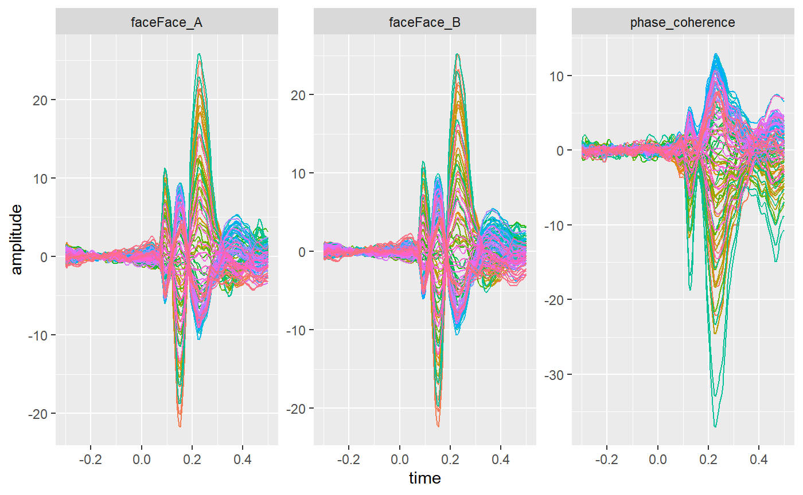
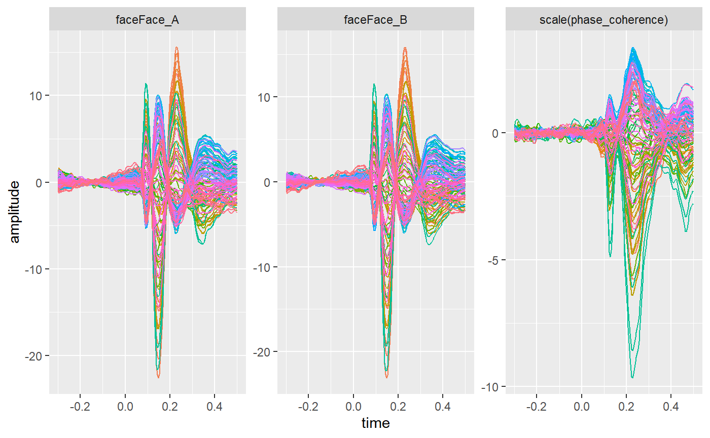

Linear Modelling
Matt Craddock
2020-02-11
Source:vignettes/linear_modelling.Rmd
linear_modelling.Rmdlibrary(eegUtils)
#> Make sure to check for the latest development version at https://github.com/craddm/eegUtils!
#>
#> Attaching package: 'eegUtils'
#> The following object is masked from 'package:stats':
#>
#> filter
library(R.matlab)
#> R.matlab v3.6.2 (2018-09-26) successfully loaded. See ?R.matlab for help.
#>
#> Attaching package: 'R.matlab'
#> The following objects are masked from 'package:base':
#>
#> getOption, isOpen
library(ggplot2)
library(tidyr)Here we show how to fit a linear model to single subject’s data. We’ll use the data from the LIMO EEG dataset. S1
limo_test <- import_set("limo_dataset_S1.set")
#> loading from .fdt
limo_cont <- R.matlab::readMat("continuous_variable.mat")
limo_cat <- readr::read_csv("categorical_variable.txt",
col_names = c("cond_lab"))
#> Parsed with column specification:
#> cols(
#> cond_lab = col_double()
#> )The linear model fitting function in eegUtils uses the epochs field of the data structures. To use these for linear modelling here, we’ll add the categorical and continuous predictors to the epochs structure.
epochs(limo_test) <- dplyr::mutate(epochs(limo_test),
phase_coherence = unlist(limo_cont),
face = factor(limo_cat$cond_lab,
levels = c(1, 2),
labels = c("Face_A",
"Face_B")))
epochs(limo_test)
#> # A tibble: 1,055 x 5
#> epoch participant_id recording phase_coherence face
#> <int> <chr> <chr> <dbl> <fct>
#> 1 1 limo_dataset_S1 limo_dataset_S1 0.6 Face_B
#> 2 2 limo_dataset_S1 limo_dataset_S1 0.55 Face_A
#> 3 3 limo_dataset_S1 limo_dataset_S1 0.3 Face_B
#> 4 4 limo_dataset_S1 limo_dataset_S1 0.1 Face_A
#> 5 5 limo_dataset_S1 limo_dataset_S1 0.15 Face_A
#> 6 6 limo_dataset_S1 limo_dataset_S1 0.1 Face_B
#> 7 7 limo_dataset_S1 limo_dataset_S1 0.85 Face_A
#> 8 8 limo_dataset_S1 limo_dataset_S1 0.8 Face_B
#> 9 9 limo_dataset_S1 limo_dataset_S1 0.25 Face_A
#> 10 10 limo_dataset_S1 limo_dataset_S1 0.65 Face_B
#> # ... with 1,045 more rowsThe first argument to fit_glm() is a standard R formula, using Wilkinson notation. Unusually, the left hand side of the ~ is omitted, since we’ll be fitting the model to every electrode at every timepoint. On the right hand side, we put our predictors. In this case, we have two: face, a categorical predictor; and phase_coherence, a continuous predictor. The appropriate formula is thus ~face + phase_coherence.
The function fits whatever contrasts. R’s default contrasts are treatment or dummy contrasts, so we’ expect the model to return three coefficients: an intercept, which will be the amplitude when the categorical predictor is at its first level (i.e. Face A); a face term, which will be the difference in amplitude from the intercept when the level of Face is Face B; and a phase_coherence term, which will be the increase in amplitude when image phase coherence increases from 0 to 1.
fitted_model <- fit_glm(~ face + phase_coherence,
data = limo_test)
as.data.frame(fitted_model,
long = TRUE) %>%
ggplot(aes(x = time,
y = amplitude,
colour = electrode)) +
geom_line() +
facet_wrap(~coefficient,
scales = "free") +
theme(legend.position = "none")
An alternative paramterization would be to remove the intercept term. The function would then return separate coefficients represent Face A and Face B. This would be particularly helpful if you are planning to take these coefficients forwards to a second-level analysis.
fitted_model_no_int <- fit_glm(~0 + face + phase_coherence,
data = limo_test)
as.data.frame(fitted_model_no_int,
long = TRUE) %>%
ggplot(aes(x = time,
y = amplitude,
colour = electrode)) +
geom_line() +
facet_wrap(~coefficient,
scales = "free") +
theme(legend.position = "none")
Continuous predictors can be rescaled using the scale() function, which converts them to z-scores (i.e. standard deviation units).
fitted_model_zscore <- fit_glm(~0 + face + scale(phase_coherence),
data = limo_test)
as.data.frame(fitted_model_zscore,
long = TRUE) %>%
ggplot(aes(x = time,
y = amplitude,
colour = electrode)) +
geom_line() +
facet_wrap(~coefficient,
scales = "free") +
theme(legend.position = "none")
The function also provide additional information. For example, we can get the \(r^2\) value representing model fit:
fitted_model$r_sq %>%
pivot_longer(cols = channel_names(limo_test),
names_to = "electrode",
values_to = "r_sq") %>%
ggplot(aes(x = time,
y = r_sq,
colour = electrode)) +
geom_line() +
theme(legend.position = "none")